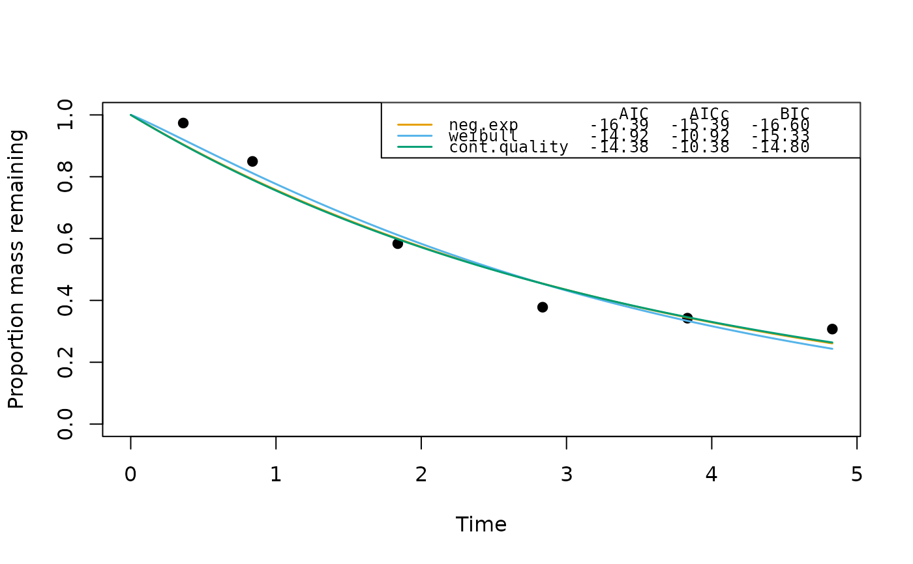

Plots the data with the fitted curve of every model in a litfit_list, and a
legend table of AIC, AICc and BIC sorted by AICc.
Usage
# S3 method for class 'litfit_list'
plot(
x,
col = NULL,
legend.pos = "topright",
legend.bty = "o",
legend.cex = 0.8,
...
)Arguments
- x
a
litfit_listfromfit_litter_alloras_litfit_list- col
colours for the curves, recycled; defaults to the colour-blind safe Okabe-Ito palette
- legend.pos
position of the legend, passed to
legend; useNAto omit it- legend.bty
box type of the legend (
"o"or"n")- legend.cex
size of the legend text
- ...
additional arguments passed to
plot.default
Details
Data points are taken from the first fit; fits in a litfit_list are
normally made to the same data.
Examples
fits <- fit_litter_all(
time = pineneedles$Year, mass.remaining = pineneedles$Mass.remaining,
models = c("neg.exp", "weibull", "cont.quality"), iters = 100
)
plot(fits)
